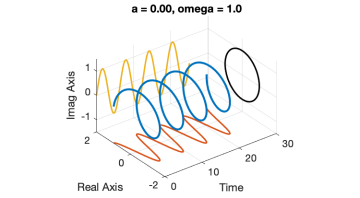
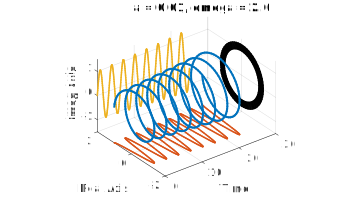
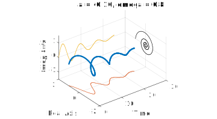

Section 2.2 Complex exponentials
¶From 2.2 in the text, but some of this was covered by me in the last chapter. You can skip "\(s^n=1\)".
For second-order equations the complex plane becomes indispensible. Recall again the polar form of a complex number,
\begin{equation*}
re^{i\theta} = (r\cos \theta)+i(r\sin \theta)\text{.}
\end{equation*}
This gives us a way of looking at the exponential of any complex number as
\begin{equation*}
e^{x+iy} = e^x e^{iy} = (e^x\cos y)+i(e^x\sin y)\text{.}
\end{equation*}
More importantly, we can look at exponential functions of time more generally as
\begin{equation}
e^{(a+i \omega)t} = e^{at} (\cos \omega t + i \sin \omega t)\text{.}\label{eq-so-exp-exp}\tag{2.2.1}
\end{equation}
Reading from right to left, we have the product of \(e^{i\omega t}\text{,}\) which goes around and around the unit circle at constant speed, and \(e^{at}\text{,}\) which is an amplitude that exponentially grows or decays (or stays fixed if \(a=0\)).
Here are some looks at the function \(e^{st}\) for different complex values of \(s\text{.}\) First, when \(s\) is purely imaginary, the function values stay on the unit circle in the complex plane. Taking the real and imaginary parts of the function give cosine and sine, respectively.
a = 0; om = 1;
t = linspace(0, 25, 500);
f = exp((a+1i*om)*t);
plot3(t, real(f), imag(f), 'LineWidth',2)
hold on
plot3(t,real(f), 0*t-1.5)
plot3(t, 0*t+2, imag(f))
plot3(0*t+30,real(f),imag(f),'k')
axis([0 30 -2 2 -1.5 1.5])
title(sprintf('a = %.2f, omega = %.1f',a,om))
grid on, xlabel('Time')
ylabel('Real Axis')
zlabel('Imag Axis')
set(gca,'dataaspect',[6,1,1])

If \(\text{Re} s \gt 0\text{,}\) the magnitude of the function grows exponentially. The result is an outward spiral. The imaginary part of \(s\) controls the frequency or "tightness" of the spiral.
a = 0.01; om = 2;
t = linspace(0, 25, 500);
f = exp((a+1i*om)*t);
plot3(t, real(f), imag(f), 'LineWidth',2)
hold on
plot3(t,real(f), 0*t-1.5)
plot3(t, 0*t+2, imag(f))
plot3(0*t+30,real(f),imag(f),'k')
axis([0 30 -2 2 -1.5 1.5])
title(sprintf('a = %.2f, omega = %.1f',a,om))
grid on, xlabel('Time')
ylabel('Real Axis')
zlabel('Imag Axis')
set(gca,'dataaspect',[6,1,1])

Finally, if \(\text{Re} s \lt 0\text{,}\) the spiral is a decaying one. The real and imaginary parts are attenuated oscillations.
a = -0.1; om = 0.8;
t = linspace(0, 25, 500);
f = exp((a+1i*om)*t);
plot3(t, real(f), imag(f), 'LineWidth',2)
hold on
plot3(t,real(f), 0*t-1.5)
plot3(t, 0*t+2, imag(f))
plot3(0*t+30,real(f),imag(f),'k')
axis([0 30 -2 2 -1.5 1.5])
title(sprintf('a = %.2f, omega = %.1f',a,om))
grid on, xlabel('Time')
ylabel('Real Axis')
zlabel('Imag Axis')
set(gca,'dataaspect',[6,1,1])

The upshot is that in the function \(e^{st}\text{,}\) the real part of \(s\) determines exponential growth or decay, and the imaginary part of \(s\) determines frequency of oscillation. All real exponentials, and all harmonic sines and cosines, are just special cases.
Let's look back a moment at \(my''+ky=0\text{.}\) If we now try an exponential solution of the form \(y_n=e^{st}\text{,}\) then we arrive at \((ms^2+k)e^{st}=0\text{,}\) which we can make true if \(s^2=-k/m\text{.}\) This has two roots, \(s=\pm i \omega_n\text{,}\) and we are led to
\begin{equation*}
y_n = c_1 e^{i\omega_n t} + c_2 e^{-i\omega_n t}\text{.}
\end{equation*}
A little rearrangement should convince you that this is equivalent to the form we got in the last section, just using complex numbers.
Similarly, for the forced problem \(my''+ky=e^{i\omega t}\text{,}\) we can get a particular solution \(y_p=Y e^{i\omega t}\) if we let \(Y=1/(k-m\omega^2)\text{.}\) This works for both cosine and sine forcing upon taking real and imaginary parts, and we go right back to the formulas from before. Rather than exploring the details here, we will next do it all for a more general problem that includes a \(y'\) term in the ODE.